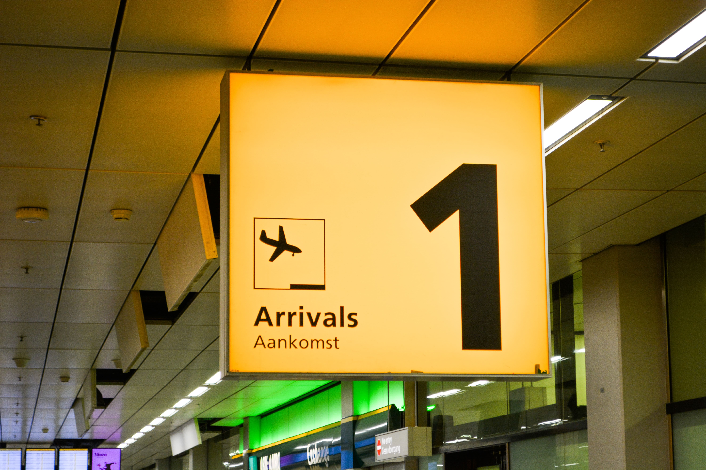

ECONOMISTA ESPECIALISTA EN TRANSPORTE AEREO
Soy Economista con varios años de experiencia en el área económica del transporte aéreo, estoy creando mi pg. Web con la mejor de las intenciones de brindar al sector de la aviación civil mis conocimientos y experiencias y contribuir de alguna manera en el desarrollo de esta importante actividad. La visión global que tengo de la actividad de transporte aéreo la he obtenido desde mi condición del ejercicio público, primero como Analista de los diferentes procesos en materia de Aviación Civil en el Sector Gobierno y como Autoridad Aeronáutica al desempeñarme como Director de Transporte Aéreo en Venezuela, y en el ejercicio privado por la elaboración y ejecución de proyectos de transportistas aéreos y otros entes privados Mi formación Académica se la debo a la Universidad de Los andes de Venezuela, la Organización de Aviación Civil Internacional, (OACI), la Comisión Latinoamericana de Aviación Civil, (CLAC) la Asociación Internacional de Líneas Aéreas (IATA), Instituto Iberoamericano de Derecho Aeronáutico, los estudios de formulación y evaluación de proyectos de las Naciones Unidas entre otros.